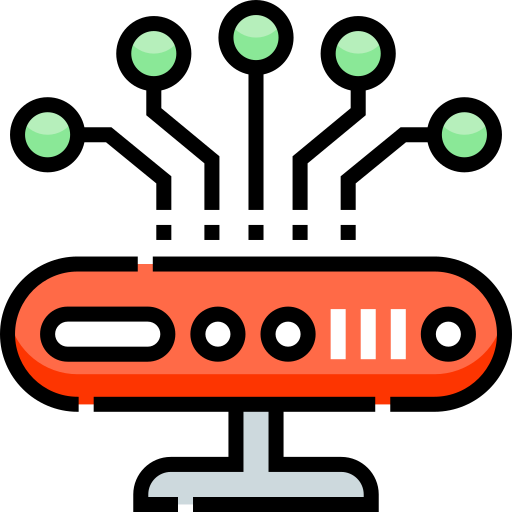

CAPA 8 Usuario
El error o culpa del usuario; El famoso CAPA 8, es el usuario final, la persona a la que se tiene y debe obligar a respetar las normas de Seguridad Informática.
CAPA 7 Aplicacion
Ofrece a las aplicaciones la posibilidad de acceder a los servicios de las demás capas y define los protocolos que utilizan las aplicaciones para intercambiar datos, como correo electrónico (POP y SMTP), gestores de bases de datos y protocolos de transferencia de archivos (FTP).La capa de aplicación sirve como ventana a los usuarios y los procesos de las aplicaciones para acceder a servicios de red. Esta capa contiene una variedad de funciones de uso común:
*Compartición de recursos y redireccionamiento de dispositivos
*Acceso remoto de archivos
*Acceso remoto a impresoras
*Comunicación entre procesos
*Administración de red
*Servicios de directorio
*Mensajería electrónica
*Terminales virtuales de red
CAPA 6 Presentacion
El objetivo de esta capa es encargarse de la representación de la información, de manera que, aunque distintos equipos puedan tener diferentes representaciones internas de caracteres los datos lleguen de manera reconocible.Esta capa es la primera en trabajar más el contenido de la comunicación que el cómo se establece la misma. En ella se tratan aspectos tales como la semántica y la sintaxis de los datos transmitidos, ya que distintas computadoras pueden tener diferentes formas de manejarlas.
La capa de presentación es la encargada de:
*Definir el formato de los datos que se van a intercambiar entre las aplicaciones y ofrecer un conjunto de servicios de transformación de datos.
*Definir la sintaxis utilizada entre entidades de aplicación y proporcionar los medios para la selección y modificación de la representación utilizada.
*Codificar los datos en modo estándar (enteros, reales, caracteres, etc.) y realizar funciones de compresión y cifrado de datos.

CAPA 5 Sesion
Esta capa es la que se encarga de mantener y controlar el enlace establecido entre dos ordenadores que están transmitiendo datos. Por lo tanto, el servicio provisto por esta capa es la capacidad de asegurar que, dada una sesión establecida entre dos máquinas, la misma se pueda efectuar para las operaciones definidas de principio a fin, reanudándolas en caso de interrupción.La capa de sesión proporciona los siguientes servicios:
*Control del diálogo: Éste puede ser simultáneo en los dos sentidos (full-duplex) o alternado en ambos sentidos (half-duplex).
*Agrupamiento: El flujo de datos se puede marcar para definir grupos de datos.
*Recuperación: La capa de sesión puede proporcionar un procedimiento de puntos de comprobación, de forma que, si ocurre algún tipo de fallo entre puntos de comprobación, la entidad de sesión puede retransmitir todos los datos desde el último punto de comprobación y no desde el principio.
CAPA 4 Transporte
La capa de transporte proporciona mecanismos de intercambio de datos entre sistemas finales o extremo a extremo. Este intercambio debe realizarse libre de errores, en consecuencia, sin pérdidas ni duplicados y cumpliendo los requisitos establecidos.La unidad de información de esta capa se denomina segmento o datagrama
Es misión de esta capa:
*Recibir los datos del nivel superior, dividirlos (segmentación y reensamblado) si fuera necesario y enviarlos al nivel de red para que los transmita, asegurando que todos los trozos lleguen de manera correcta y eficiente al otro extremo (ordenación de paquetes).
*Realizar un control de flujo de extremo a extremo.
*Establecimiento, mantenimiento y cierre de la conexión.
*Optimizar el empleo del nivel de red (multiplexación/demultiplexación).
*Control de errores.
*Direccionamiento del punto de servicio.

CAPA 3 Red
La capa de red proporciona los medios necesarios para la transferencia de información entre sistemas finales a través de algún tipo de red de datos. De esta manera, las capas superiores no tienen que conocer la técnica de conmutación empleada o el camino que seguirá el mensaje hacia el destino.Las unidades de información de esta capa se denominan paquetes.
Se encarga, entre otros, de los siguientes aspectos:
*Técnicas de conmutación
*Encaminamiento o enrutamiento
*Gestión de prioridades
*Control de la congestión
*Tarificación
*Interconexión de redes
*Direccionamiento (identificación de sistemas)

CAPA 2 Enlace de Datos
La capa de enlace de datos utiliza la funcionalidad ofrecida por la capa física. Aunque la capa física ofrece un mecanismo para enviar/recibir datos, esta capa no se encarga de comprobar si los datos recibidos son correctos.La capa de enlace de datos tiene como objetivo ofrecer a los niveles superiores un enlace libre de errores, proporcionando mecanismos para el control y la detección de errores. Además, ofrece medios para activar, mantener y desactivar este enlace.
Por otra parte, se encarga del control del enlace de datos, realizando tareas como la delimitación de dichas tramas, reconocimiento de tramas, resolución de pérdidas de datos y duplicaciones, control de flujo y control del sentido de la transmisión.
Esta capa se ocupa, en resumen, de los siguientes aspectos:
*Direccionamiento físico
*Topología de la red
*División de los datos en tramas
*Acceso al medio
*Detección de errores
*Distribución ordenada de tramas
*Control de flujo

CAPA 1 Fisica
Esta capa ofrece a los niveles superiores un servicio de transmisión de datos, es decir, proporciona un mecanismo para enviar y recibir bits empleando el canal de comunicación.Se encarga de las especificaciones mecánicas, eléctricas, funcionales y de procedimientos de la transmisión física.
*Mecánicas: Se refiere a las características físicas del elemento de conexión con la red, es decir, a las propiedades de la interfaz física con el medio de comunicación. Por ejemplo, las dimensiones y forma del conector, el número de cables usados en la conexión, el número de pines del conector, el tamaño del cable, el tipo de antena, etc.
*Eléctricas: Especifica las características eléctricas empleadas, por ejemplo, la tensión usada, velocidad de transmisión, intensidad en los pines, etc.
*Funcionales: Define las funciones de cada uno de los circuitos del elemento de interconexión a la red, por ejemplo, pin X para transmitir, pin Y para recibir, etc.
*De procedimiento: Establece los pasos a realizar para transmitir información a través del medio físico.